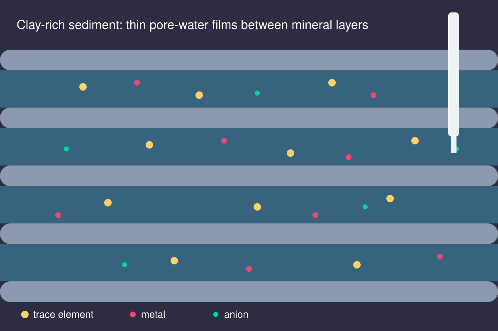

Listening to water that has been sitting still for millions of years

A drop of water with a long memory
Dig deep into the ground in the Netherlands and you hit clay: stiff, grey, laid down in ancient seas tens of millions of years ago. It looks inert. It is not. Between its microscopic mineral plates sits a thin film of water, the pore water, that has barely moved since those seas retreated. Everything dissolved in it is a message from the deep past: which elements the clay has held on to, which ones have slipped away, and how the chemistry of the rock has quietly evolved.
Why anyone cares about boring grey mud
Clay is almost impermeable, and that is exactly why countries such as the Netherlands, Belgium and Switzerland study it as a possible host for the geological disposal of radioactive waste. In the Netherlands the waste is stored above ground for around a century while the long-term solution is prepared. The big question for the next stage is simple to ask and very hard to answer: if something were ever to leak, how fast, and how far, would it travel through clay? The answer depends on how strongly each element sticks to the clay and its iron minerals, and that is chemistry we can measure.
Detective work on a tiny scale
Getting a clean sample of this water is a puzzle in itself. Squeeze the clay too hard and you change what is dissolved. Let it touch air and iron minerals rust, pyrite oxidises, and the chemistry you wanted to study is gone. Different ways of extracting pore water can give different answers, so a large part of the work is learning which methods to trust, and by how much. It is part laboratory craft, part forensic science.
What I bring to it
During my PhD I spent years learning how iron minerals grab and release elements such as phosphate under changing oxygen and sulfide conditions. Clay-rich sediments hold the same kind of minerals, so the same thinking applies: which trace elements are locked onto surfaces, which move with the water, and what would make them switch?
Why it matters beyond waste
Trace elements in pore water also tell us about natural processes: how sediments record past environments, how nutrients and metals cycle in deep aquifers, and how groundwater quality evolves. Understanding a rock that moves almost nothing turns out to help us understand a planet that moves everything.
References
- Neeft, E.A.C., Hoving, A.L., Griffioen, J., Behrends, T., Vuorio, M.R., Ma, M. (2026). Trace elements in Dutch Paleogene clays. Geological Society, London, Special Publications, 561. [Scholar]
- Ma, M., Behrends, T. Examining methodological approaches to determine the trace element composition in porewater of clay sediments from the Netherlands. (Report) [Report on Scholar]